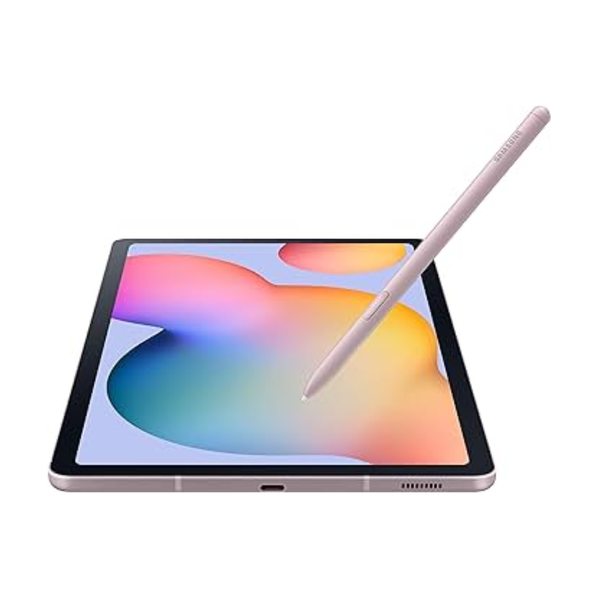

BIANCA OLIVEIRA
profissaoParticipar do SheTech foi transformador para mim. Eu sempre tive interesse por tecnologia, mas nunca tive incentivo de explorar isso de verdade. No programa, encontrei um espaço de apoio e vi que não estava sozinha. Poder estar ao lado de outras meninas que compartilham o mesmo interesse foi incrível, me fez perceber que podemos sim fazer parte dessa área e ainda causar um grande impacto no futuro.